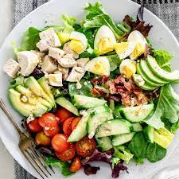

Why track calories?
Tracking calories is crucial for several reasons when it comes to maintaining a healthy lifestyle.
- Firstly, it provides a clear picture of one's daily intake, enabling individuals to manage their weight effectively. By understanding the number of calories consumed versus the calories expended through physical activity, people can create a balanced energy equation that supports weight loss, maintenance, or gain.
- Additionally, monitoring calories aids in developing awareness about portion sizes and food choices. It encourages mindful eating habits and helps individuals make informed decisions about their nutrition, fostering a better understanding of the nutritional content in various foods.
- For those with specific health goals, such as athletes or individuals managing certain medical conditions, tracking calories can ensure they meet their dietary requirements, optimizing performance and overall well-being.
- Overall, tracking calories serves as a valuable tool in promoting accountability, knowledge, and control over one's diet, contributing significantly to overall health and fitness.
Good Calories
Bad Calories